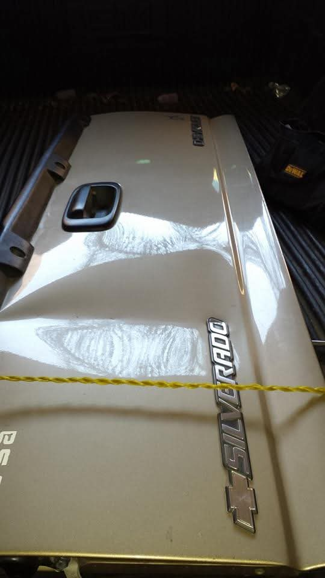
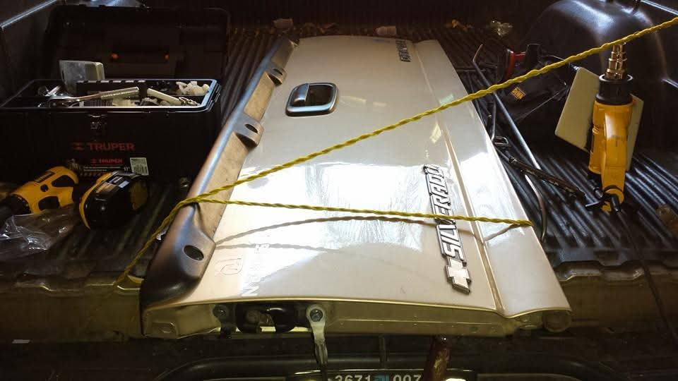

Antes: Abolladura


Varillaje PDR Especializado
Chevrolet Silverado · Compuerta de Batea
Reparación de abolladura severa en la tapa de batea bajo el emblema y jaladera. Se aplicó técnica de varillaje artesanal de alta precisión (PDR) sin necesidad de repintar, conservando la pintura y acabado de fábrica original al 100%.
Cotizar trabajo similar